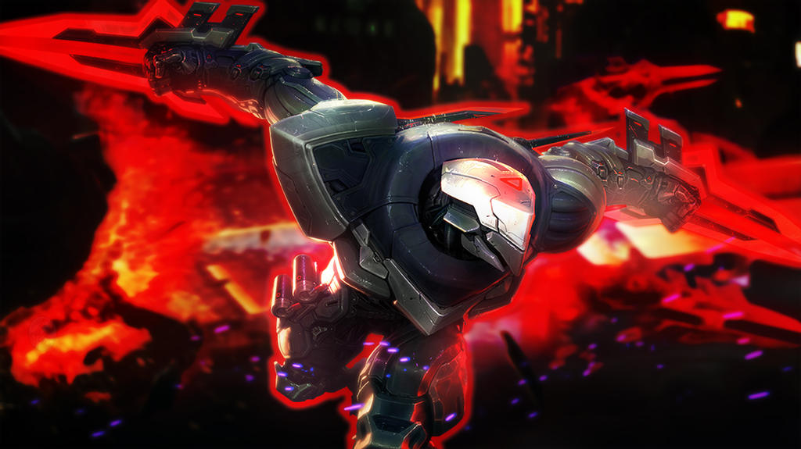
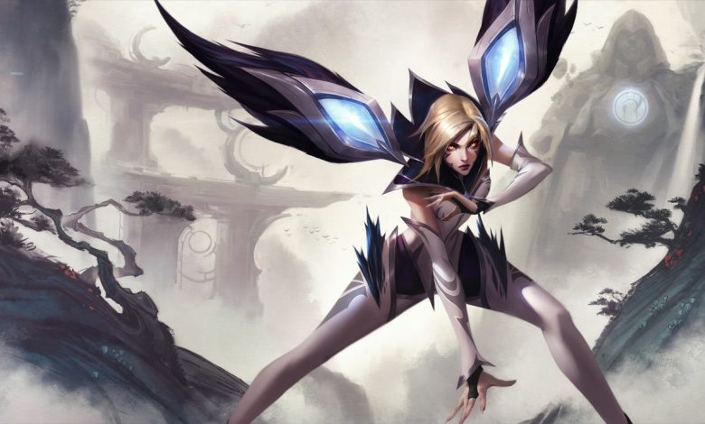

Zed, despiadado y nada compasivo, es el líder de la Orden de la Sombra, una organización que él mismo creó con el propósito de militarizar las tradiciones marciales y mágicas de Jonia para expulsar a los invasores noxianos.
Tal vez lo más destacable sobre la audaz cazadora del Vacío conocida como Kai'Sa es lo simple que fue el comienzo de su vida. Ella no fue descendiente de guerreros tribales curtidos por generaciones de batalla ni la trajeron desde tierras distantes para pelear contra la desconocida amenaza que acechaba debajo de Shurima.
Yasuo, un intrépido jonio con una fuerza de voluntad inquebrantable, es también un hábil espadachín capaz de controlar el viento y utilizarlo contra sus enemigos. Siendo un joven orgulloso fue injustamente acusado de asesinar a su maestro.